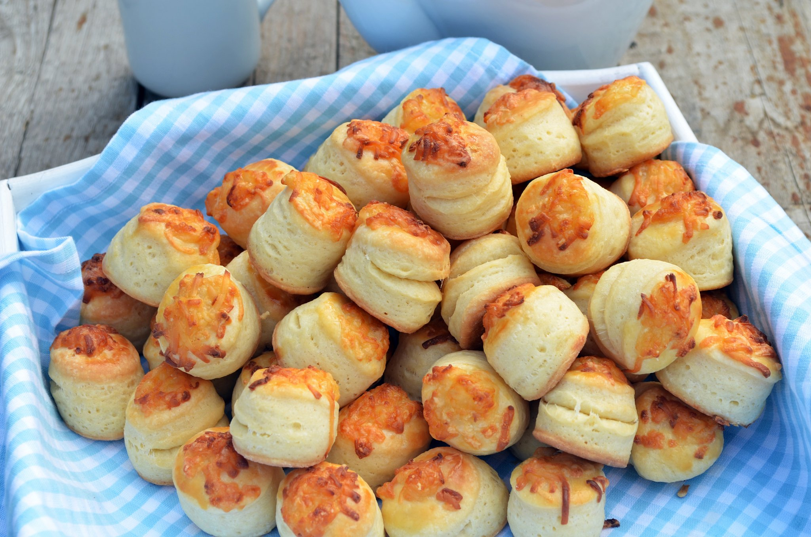

Pogácsa
A pogácsa egy kisebb kerek, általában sós sütemény, de létezik
édes változata is. A Kárpát-medencei, a balkáni és a török konyha
jellegzetes terméke. Elterjedt változatai a burgonyás, vajas,
tepertős, juhtúrós és káposztás pogácsa.

Hozzávalók / 4 adag
Mennyiség
finomliszt (finom)
50 dekagramm
mangalica zsír / vaj
15 dekagramm
élesztő
2.5 dekagramm
só
1 evőkanál
cukor
1 evőkanál
víz / tej
2 deciliter
tojás (a kenéshez)
1 darab
sajt
5 dekaragramm
Elkészítés
1. Egy nagy tálba beletesszük a lisztet, az olvasztott zsírt, a
cukrot és a sót.
Cím kiírása